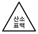
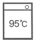

세탁기능사 (2007-07-15 기출문제)
1과목: 세정이론
1. 보일러의 부피를 일정하게 유지하고 증기의 온도를 상승시켰을 때 압력은?
- 일정하다.
- 감소한다.
- 상승한다.
- 압력과 관계없다.
(정답률: 87%)

2. 다음 중 기술진단 포인트가 아닌 것은?
- 마모
- 변형
- 얼룩
- 수량
(정답률: 85%)
3. 보일러 수증기의 온도를 약 120℃로 하기 위한 보일러의 압력은 약 몇 기압(kg/cm3)이 되어야 하는가?
- 1기압
- 2기압
- 3기압
- 3.5기압
(정답률: 77%)
4. 다음 중 재오염률 계산식으로 옳은 것은?
- 재오염률(%) = [(원포반사율-세정후반사율) / 원포반사율] × 100
- 재오염률(%) = [(세정후반사율-원포반사율) / 원포반사율] × 100
- 재오염률(%) = [(세정후반사율-원포반사율) / 세정후반사율] × 100
- 재오염률(%) = [(원포반사율-세정후반사율) / 세정후반사율] × 100
(정답률: 66%)
5. 다음 중 재오염 방지 효과가 있어 용제와 함께 첨가 시키는 물질은?
- 벤젠
- 알코올
- 소프
- 클로로포름
(정답률: 67%)
6. 세정 후 반사율 15%이고, 오염포 반사율 14%이며, 원포 반사율 20%일 때, 세정률은 약 몇 %인가?
- 5.8%
- 16.7%
- 25.6%
- 35.2%
(정답률: 59%)
7. 청정제의 설명 중 틀린 것은?
- 여과제는 필터에 부착시켜서 불순물이나 고형입자를 여과하여 제거하기 위하여 사용한다.
- 탈산제는 용제 중에 용해된 불순물이나 유지 등이 분해하여 발생하는 지방산 같은 유성 오염물을 제거하기 위하여 사용한다.
- 활성백토는 색소·수분·불순물의 흡착력이 크고, 증류에 가까운 효과를 나타낸다.
- 규조토는 흡착력이 우수하나 여과력은 없다.
(정답률: 70%)
8. 다음 섬유 중 일반적으로 오염제거가 제일 까다로운 것은?
- 폴리에스테르
- 마
- 아세테이트
- 실크
(정답률: 57%)
9. 불연성으로 상압에서 증류되고 독성이 강하며, 용제의 안전성이 낮으므로, 열분해하여 기계의 부식이나 의류에 손상을 일으킬 수 있는 드라이클리닝 용제는?
- 석유계 용제
- 사염화탄소
- 퍼클로로에틸렌
- 불소계 용제
(정답률: 54%)
10. 비누의 특성을 설명한 내용 중 틀린 것은?
- 세탁효과가 우수하나 산성 용액에서 사용할 수 없다.
- 거품이 잘 생기고 헹굴 때는 거품이 사라진다.
- 세탁한 직물의 촉감이 우수하다.
- 가수분해되어 유리지방산을 생성하고 산성을 나타낸다.
(정답률: 76%)
11. 섬유 자체의 성능이 저하된 경우에 실시하는 재가공법인 것은?
- 위생 가공
- 대전방지 가공
- 방충 가공
- 풀먹임 가공
(정답률: 57%)
12. 오점이 잘 제거되는 섬유부터 순서를 옳게 나열한 것은?
- 아세테이트-비닐론-양모-나일론
- 면-나일론-양모-비단
- 양모-나일론-비닐론-아세테이트
- 비닐론-아세테이트-양모-나일론
(정답률: 92%)
13. 흡착제의 종류에 따른 기능을 설명한 내용 중 틀린 것은?
- 알루미나겔은 탈산과 탈취에 뛰어나다.
- 활성백토는 탈색작용이 뛰어나다.
- 경질토는 탈수에 뛰어나다.
- 산성백토는 탈색에 뛰어나다.
(정답률: 66%)
14. 다음 보일러에 관한 설명 중 틀린 것은?
- 보일러는 온수보일러와 증기보일러가 있고 클리닝에서는 주로 증기보일러가 사용된다.
- 증기를 가압하더라도 100℃ 이상의 고온을 얻을 수 없다.
- 보일러의 보전은 고장이나 손상을 막고 오래 유지하기 위해서이다.
- 일반적으로 연료의 연소에 의해서 대기오염 물질이 생긴다.
(정답률: 64%)
15. 다음 중 우리나라에서 기계세탁용 용제로 가장 많이 사용되는 것은?
- 퍼클로로에틸렌
- 석유계 용제
- 불소계 용제
- 1.1.1트리클로로에탄
(정답률: 78%)
16. 계면활성제의 성질 중 틀린 것은?
- 물과 공기 등에 흡착하여 경계면에 계면장력을 저하시킨다.
- 한 개의 분자 내에 친유성기만 갖는다.
- 습윤·침투·흡착·분산·보호·기포 등의 작용을 한다.
- 분자가 모여서 미셀을 형성한다.
(정답률: 61%)
17. 클리닝의 공정 중 론드리는 고온·중온·저온으로 분류하고, 웨트클리닝은 기계세탁과 손세탁으로 분류하는 것은?
- 대분류
- 세분류
- 중분류
- 세세분류
(정답률: 53%)
18. 다음 중 전분 풀감에 해당 것은?
- P.V.A
- 콘스타치
- 젤라틴
- C.M.C
(정답률: 72%)
19. 다음 중 수용성 오염이 아닌 것은?
- 땀
- 과즙
- 매직잉크
- 배설물
(정답률: 75%)
20. 클리닝 공정에서 제일 먼저 해야 할 일은?
- 점검
- 대분류
- 얼룩빼기
- 포켓 청소
(정답률: 73%)
2과목: 기술관리
21. 론드리에서 백색 의류에 형광염료가 떨어졌다. 어떤 공정에 해당하는 사고인가?
- 본 빨래 중에 의한 것
- 산욕 처리에 의한 것
- 건조처리 중에 의한 것
- 헹굼 과정에 의한 것
(정답률: 61%)
22. 합성직물로 된 폴리에스테르 의복을 세탁하였더니 정전기가 심하게 일어난다. 이를 개선하기 위해서는 어떤 가공을 하여야 하는가?
- 풀먹임 가공
- 대전방지 가공
- 방수 가공
- 발수 가공
(정답률: 85%)
23. 론드리와 가정세탁을 비교해 볼 때, 론드리의 특성이 아닌 것은?
- 고온과 고압이 사용되므로 끝마무리가 좋다.
- 세제와 물이 많이 든다.
- 표백이나 풀먹임이 효과적이고 용이하다.
- 마무리에는 상당한 시간과 기술이 필요하다.
(정답률: 48%)
24. 다음 중 얼룩빼기가 가장 어려운 것은?
- 커피
- 구두약
- 황변 얼룩
- 수성 페인트
(정답률: 63%)
25. 드라이클리닝 용제로 인한 피해가 우려되는 제품이 아닌 것은?
- 염화비닐 합성피혁
- 수지안료 가공 제품
- 고무를 입힌 제품
- 아세테이트 제품
(정답률: 71%)
26. 다음 중 스탬프잉크의 오점을 가장 빠르게 제거할 수 있는 약품은?
- 로드유
- 벤젠
- 유성 소프
- 신나
(정답률: 33%)
27. 의복의 기능과 관계가 가장 먼 것은?
- 위생상의 성능
- 상품상의 성능
- 관리적 성능
- 감각적 성능
(정답률: 66%)
28. 다음 중 다림질 작업시의 주의점으로 틀린 것은?
- 보일러의 물을 자주 교체하여 다리미에서 녹물이 나오지 않도록 한다.
- 진한 색상의 의복은 섬유 소재에 관계없이 천을 덮고서 다린다.
- 편성물은 인체프레스기를 사용하면 회복 불가 정도로 늘어진다.
- 섬유의 적정온도보다 다리미 온도가 낮으면 황변이 일어날 수 있다.
(정답률: 73%)
29. 다음 중 얼룩빼기를 하기에 적절치 않은 경우는?
- 옷 전체를 세탁할 필요가 없는 부분 얼룩이 있을 때
- 세탁 시에 다른 부분으로 번질 우려가 있는 얼룩이 있을 때
- 특이한 얼룩은 없고 옷에서 음식 냄새가 날 때
- 세탁을 하여도 제거되지 아니한 얼룩이 있을 때
(정답률: 69%)
30. 드라이클리닝의 기술적 효과로서의 세탁작용 과정 순서가 옳게 나열된 것은?
- 침투작용 → 흡착작용 → 분산작용 → 유화, 현탁작용
- 침투작용 → 흡착작용 → 유화, 현탁작용 → 분산작용
- 흡착작용 → 침투작용 → 유화, 현탁작용 → 분산작용
- 침투작용 → 유화, 현탁작용 → 분산작용 → 흡착작용
(정답률: 64%)
31. 론드리에 관한 설명 중 틀린 것은?
- 모직물이나 견직물로 된 백색세탁물의 백도를 회복하기 위한 세탁이다.
- 와셔는 원통형이므로 물품이 상하지 아니한다.
- 주로 비누를 사용하므로 공해가 적다.
- 와셔 내부 드럼의 회전속도는 세탁효과에 크게 영향을 미친다.
(정답률: 66%)
32. 드라이클리닝을 하기 전의 전처리 공정을 설명한 것 중 틀린 것은?
- 브러싱액을 묻힌 브러시로 얼룩 있는 곳을 두드려서 더러움을 분산시키는 법을 브러싱법이라 한다.
- 세정에서 제거하기 어려운 오점을 쉽게 제거되도록 세정 전에 하는 처리 과정이다.
- 풀리게 하거나 뜨게 한 후, 와셔에 넣어서 오점을 제거하는 방법, 더러운 곳에 처리액을 뿌려서 오점을 제거하는 방법을 스프레이법이라 한다.
- 수성 오점은 전처리를 하지 않는 그대로 넣어도 오점 제거가 된다.
(정답률: 63%)
33. 알칼리 세탁으로 탈색의 위험이 높은 섬유는?(오류 신고가 접수된 문제입니다. 반드시 정답과 해설을 확인하시기 바랍니다.)
- 견
- 폴리에스테르
- 아크릴
- 마
(정답률: 18%)
34. 다음의 세탁기호 설명이 옳은 것은?

- 산소계 표백제로 표백할 수 있음
- 산소계 표백제로 표백할 수 없음
- 염소계 표백제로 표백할 수 있음
- 염소, 산소계 표백제로 표백할 수 없음
(정답률: 82%)
35. 한 가닥 또는 여러 가닥의 실로 고리 모양의 편환 (loop)을 만들어서 이것을 상하와 좌우로 얽어서 만든 천은?
- 직물
- 편성물
- 조물
- 레이스
(정답률: 68%)
36. 다음 중 머어서화 면의 특성 설명으로 틀린 것은?
- 강력이 증가한다.
- 흡습성이 증가한다.
- 비단광택이 생긴다.
- 엉킴성이 증가한다.
(정답률: 45%)
37. 다음 중 수분을 흡수할 때, 가장 강도 저하가 심한 것은?
- 양모
- 레이온
- 나일론
- 면
(정답률: 59%)
38. 폴리에스테르 섬유의 성질 설명으로 옳은 것은?
- 내구성이 아크릴보다는 좋고 나일론보다는 좋지 않다.
- 신장 회복률이 좋아서 주름이 잘 발생한다.
- 흡습성이 커서 세탁을 하면 쉽게 잘 줄어든다.
- 대부분의 염료에 의해 쉽게 염색이 잘 된다.
(정답률: 56%)
39. 다음 중 부직포의 특징에 해당하는 것은?
- 세탁 수축률이 크고 형태 안정성이 작다.
- 방향성이 없고 값이 고가이다.
- 탄력성이 불량하나 구김 회복성은 우수하다.
- 절단된 가장자리가 잘 풀리지 않는다.
(정답률: 64%)
40. 견(silk) 섬유에 대한 설명 중 틀린 것은?
- 동물성 섬유이다.
- 염소계 표백제로 표백한다.
- 알칼리성 비누는 광택을 나쁘게 한다.
- 단면이 삼각형이어서 광택이 우수하다.
(정답률: 51%)
3과목: 클리닝대상품
41. 의복에 아름다운 실루엣(sihouette)을 부여하는 한편, 착용 또는 세탁 등에 의하여 형태가 변형되는 것을 방지해 주는 부속재료는?
- 파스너
- 안감
- 재봉실
- 심지
(정답률: 44%)
42. 침구류 및 장식품에 대한 설명 중 틀린 것은?
- 침구류라고 하면 요·이불·베게·모포·침대 등을 말한다.
- 침구류는 인체와 직접 접촉되는 것이기 때문에 대부분 드라이클리닝을 하여야 위생적인 생활을 할 수 있다.
- 커튼·응접세트·커버·테이블보 및 각종 수예품 등을 실내 장식품이라고 한다.
- 견직물로 된 침구류는 드라이클리닝을 하여야 한다.
(정답률: 68%)
43. 다음 섬유 중 나일론 섬유가 아닌 것은?
- 노멕스
- 케블라
- 스판덱스
- 퀴아나
(정답률: 75%)
44. 각 섬유의 연소 시에 발생되는 냄새 설명으로 틀린 것은?
- 견 : 모발 태우는 냄새가 난다.
- 면·마 : 종이 태우는 냄새가 난다.
- 양모 : 약간 특수한 악취가 난다.
- 글라스 섬유 : 냄새가 없다.
(정답률: 63%)
45. 비에 젖지 않는 의복을 만들려고 할 때, 원단은 어떤 시험을 필수로 해야 하는가?
- 염색견뢰도 시험
- 수축률 시험
- 발수도 시험
- 방염성 시험
(정답률: 70%)
46. 밀도는 가장 높게 할 수 있으나 마찰에 약한 조직은?
- 평직
- 능직
- 주자직
- 편직
(정답률: 44%)
47. 다음 중 모피의 가치를 결정짓는 가장 중요한 요인이 되는 것은?
- 면모의 밀도
- 강모의 강도
- 조모의 길이
- 조모의 색채
(정답률: 72%)
48. 웨트클리닝에 해당되지 않는 것은?
- 손빨래
- 솔빨래
- 기계빨래
- 애벌빨래
(정답률: 56%)
49. 다음 마크의 뜻은?
- 100% 견 제품
- 100% 양모 제품
- 100% 면 제품
- 100% 나일론 제품
(정답률: 85%)
50. 다음 중 양모섬유에 가장 많이 사용되는 염료는?
- 직접 염료
- 배트 염료
- 산성 염료
- 분산 염료
(정답률: 69%)
51. 직물의 수축을 방지하기 위하여 제직 후 수축분을 미리 수축시키는 가공법은?
- 방축 가공
- 방오 가공
- 방추 가공
- 방수 가공
(정답률: 76%)
52. 다음 기호의 설명으로 틀린 것은?

- 물의 온도 95℃를 표준으로 세탁할 수 있다.
- 세탁기에 의하여 세탁할 수 있다.
- 손으로 빠는 것도 가능하다.
- 세제의 종류에 제한을 받는다.
(정답률: 70%)
53. 무명 섬유의 염색에 많이 사용되는 염료는?
- 직접 염료
- 염기성 염료
- 매염 염료
- 분산 염료
(정답률: 58%)
54. 다음 섬유 중 다림질 온도를 가장 높게 할 수 있는 것은?
- 식물성 섬유
- 합성 섬유
- 동물성 섬유
- 반합성 섬유
(정답률: 73%)
55. 일명 모시라고도 하며, 오래 전부터 한복감으로 많이 사용되는 마섬유는?
- 저마
- 대마
- 황마
- 청마
(정답률: 87%)
4과목: 공중위생법규
56. 공중위생관리법상 위생교육을 받아야 하는 자의 위생교육의 방법·절차 기타 필요한 사항은 어느 영으로 정하는가?
- 대통령령
- 보건복지부령
- 행정자치부령
- 노동부령
(정답률: 64%)
57. 드라이클리닝용 세탁기의 유기용제 누출 및 세탁물에 사용된 세제나 유기용제 또는 얼룩제거 약제가 남거나 좀이나 곰팡이 등이 생성된 때 2차 위반 시의 행정처분 기준은?
- 경고
- 개선명령
- 영업정지
- 영업장 폐쇄명령
(정답률: 48%)
58. 다음 중 공중위생관리법상 공중위생영업에 속하지 않는 것은?
- 숙박업
- 이용업
- 세탁업
- 학원사업
(정답률: 74%)
59. 공중위생관리법 시행규칙상 위생교육은 매년 몇 시간 실시하도록 되어 있는가?
- 8시간
- 4시간
- 8시간
- 10시간
(정답률: 87%)
60. 과태료 처분에 불복이 있는 공중위생영업자는 그 처분의 고지를 받은 날로부터 며칠 이내에 이의를 제기할 수 있는가?
- 30일
- 40일
- 50일
- 60일
(정답률: 84%)